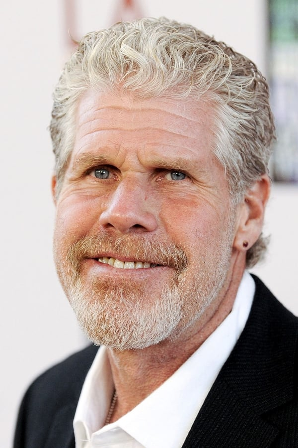
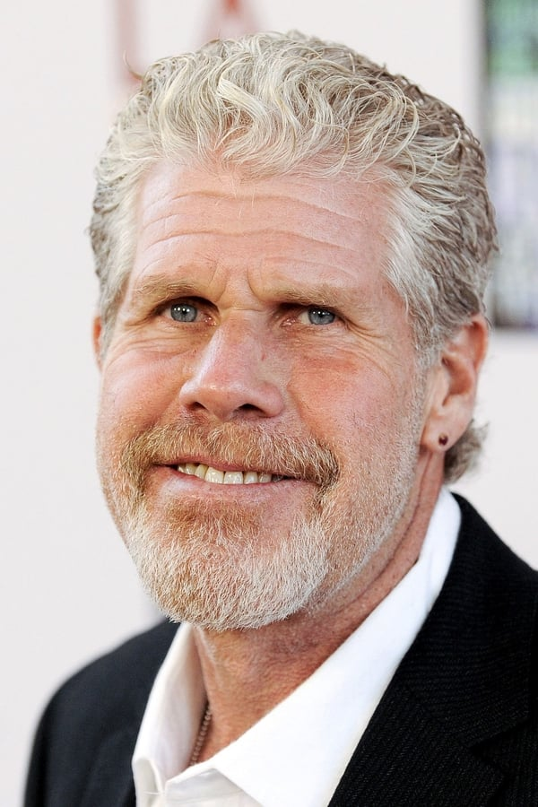

Drive (2011)
28/12/2011 (ES) • Drama, Suspense, Crimen • 1h 40m
Durante el día, Driver (Ryan Gosling) trabaja en un taller y es conductor especialista de cine, pero, algunas noches de forma esporádica, trabaja como chófer para delincuentes. Shannon (Brian Cranston), su mentor y jefe, que conoce bien su talento al volante, le busca directores de cine y televisión o criminales que necesiten al mejor conductor para sus fugas, llevándose la correspondiente comisión. Pero el mundo de Driver cambia el día en que conoce a Irene (Carey Mulligan), una guapa vecina que tiene un hijo pequeño y a su marido en la cárcel.
Nicolas Winding Refn
Marc Platt, Adam Siegel, Gigi Pritzker, Michel Litvak, John Palermo

 

Ryan Gosling
Carey Mulligan
Bryan Cranston
Ron Perlman

Patricia López

Gran película. Drive habla con silencios: hace un gran logro a partir de lo más sencillo. ¿Para qué más? Olé Refn, olé Gosling, olé Brooks, olé Mulligan. No puedo decir que es la mejor película del año, pero si la que más me ha atrapado en la historia. Quizás la violencia más limpia del cine, es decir, nunca había visto secuencias agresivas tan sencillas y bien llevadas. Me hubiese gustado que le hubiesen dado más juego a Christina Hendriks, porque los tres minutos que sale en la película me han gustado mucho. Me esperaba un poco más de Gosling, pero está impecable y correcto. Brooks se sale.
Mario Caravantes
Drive es una película genial,con mucho estilo,Nicolas Winding nos trae un filme y un protagonista memorable que con su silencio ha encandilado al espectador.La pelicula tiene un buena historia,un guión que es una auténtica maravilla y un sonido espectacular que hace que pegues algunos botes,el rugido del motor del coche constante,la BSO,buenísimas,y por supuesto también destacar la interpretación del joven Ryan Gosling,un nombre que debemos aprendernos desde ya ,porque este chico tiene mucho futuro. Todos los personajes,toda la película en general te llegan desde el principio en una narración que da envidia.Para concluir digo que es una película salvaje,dura y con fuerza,si solo tuviera que ponerle una adjetivo sería TREMENDA. Lo mejor: El personaje principal que es un Real Hero Lo peor: No soy capaz de encontrar nada.
Aroa Gómez
Tiene la virtualidad propia de las grandes peliculas: crear sensaciones casi reales en el espectador. Los breves dialogos y los silencios tienen el merito de establecer la verdadera naturaleza de la relacion entre los personajes y el significado de sus sentimientos. La violencia explicita es de contenido hiperrealista totalmente alejado del cine gore y tiene como finalidad describir el dramatismo brutal de la historia. Pero ademas y como contrapunto esta cargada de valores humanos materializados en la busqueda de sus protagonistas para alcanzar una vida mejor y tener proyectos de futuro que se manifiestan inalcalzables por la intromision de personajes deshumanizados que solo tienen como objetivo el dinero facil y el poder que conlleva poseerlo. En definitiva magnifico guion y muy buena interpretacion. No os la perdais pasareis una estupenda sesion del mejor cine..